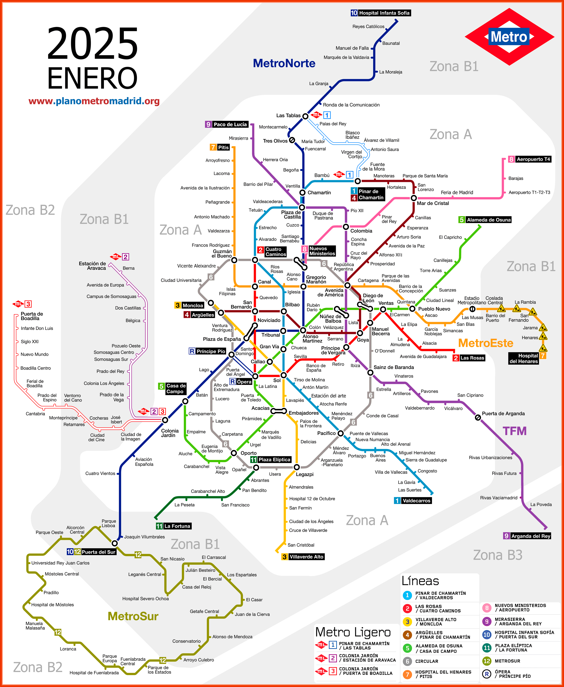
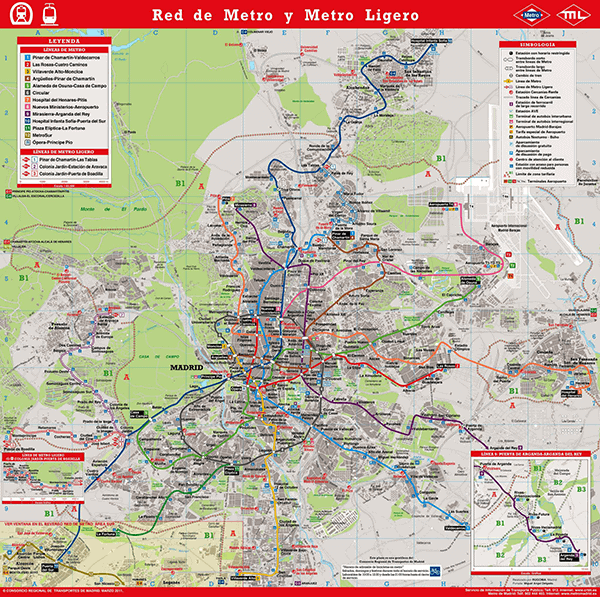

Metro de Madrid
Inicio
Planos
Sobre nosotros
Noticias
Contacto
Titulos y tarifas
Aqui estan los planos descargables del Metro de Madrid
Plano Esquemático

Descarga plano esquemático
Plano Turístico
Descarga plano turístico
Plano en base Cartográfica

Descarga plano en base cartográfica
 Descarga plano turístico
Descarga plano turístico
 Descarga plano turístico
Descarga plano turístico